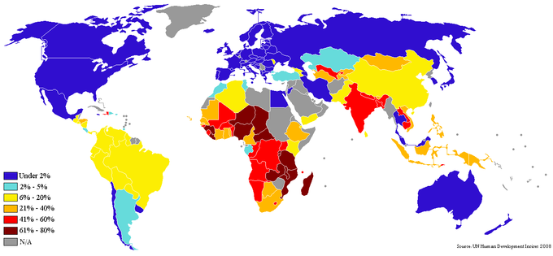
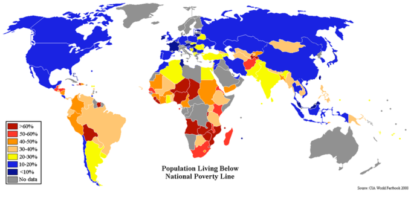

Poverty is framed from a material possessions perspective, and is defined as lacking a certain amount to fulfill basic standards of living.
Describe poverty and the poverty line
Poverty is framed from a material or capital possessions perspective, and is loosely defined as lacking a certain amount to fulfill basic standards of living. Absolute poverty is poverty to the extent of which an individual is deprived of the ability to fulfill basic human needs (i.e. water, shelter, food, education, etc.). The United Nations defines poverty as the inability to obtain choices and opportunities. The existence of poverty is one of the greatest challenges faced by the modern world, both in developing and developed nations (see ). Addressing poverty is best approached through the science of understanding monetary exchanges and the creation of wealth, and thus it is useful to employ an economic perspective when discussing and providing solutions to global poverty.
This map underlines the overall percentage of people in specific countries living on less than one dollar (USD) per day. The important takeaway is the wide range of countries suffering from varying levels of poverty.
When conceptually approaching the idea of a poverty line, it is useful to frame it within the context of generating an amount of income that is appropriate to ensure a reasonable standard of living for an individual. Someone below a nationally set poverty line lacks the purchasing power to fulfill their needs and capture opportunities. The United States, for example, has most recently (2012) set the poverty line at \$23,050 (annually) with a total of 16% of the population falling under this level (according to the U.S. Census Bureau). Internationally, the World Bank defines extreme poverty as living on less than \$1 per day (adjusted for purchasing power).
In observing poverty over time, the rates of poverty alongside the advances in economic production, demonstrates the value in technological and economic progress. The industrial revolution, the modernization (and thus increased efficiency) of agriculture, mass production in factories, technological innovation and a wide range of factors that have driven production and economies upwards have contributed to an increased standard of living. Economically, while the distribution of wealth heavily has tended to benefit the wealthy, there has been great value derived in technological progress in regards to minimizing poverty.
Varying approaches have been developed to measure poverty levels, with a particular focus on creating standardized tools to capture a global context. Poverty is generally divided into absolute or relative poverty, with absolute concepts referring to a standard that is consistent over time and geographic location. An example of absolute poverty is the number of people without access to clean drinking water, or the number of people eating less food than the body requires for survival. Absolute poverty levels, as discussed above, essentially underline the ability for an individual to survive with autonomy. Relative poverty is an approach based more upon a benchmark, that is to say the upper echelon of society versus the poor. Income distribution measures lend insight into relative poverty levels.
One interesting perspective is the Multidimensional Poverty Index (MPI). This index was created in 2010 by the Oxford Poverty & Human Development Initiative alongside the United Nations Development Programme. It leverages a variety of dimensions and applies it to the number of people and the overall intensity across the poor to create a model to capture the extent of the poverty in the region. This dimensions include health, child mortality, nutrition, standard of living, electricity, sanitation, water, shelter (via the floor), cooking fuel and assets owned.
Income inequality uses the dispersion of capital to identify how economic inequality is defined among individuals in a given economy.
Apply indices of income inequality to measure global economic inequality
Income inequality utilizes the dispersion of capital to identify the way in which economic inequality is defined among a group of individuals in a given economy. Simply put, economics measures income levels and purchasing power across a society to identify averages and distributions to identify the extent of inequalities. Historically this problem was limited to the scope of differences of income and assets between people, creating separate social classes. However, as economists expand their understanding of markets, it has become increasingly clear that there is a relationship between income inequality and the potential for long-term sustainable economic growth. As a result, a wide array of income inequality scales and metrics have been generated in order to identify challenges.
In pursuing an objective and comparable lens in which to measure income inequality, a variety of methods have been created. Models, ratios and indices include:
To simplify the information above, the basic concept behind measuring inequality is identifying an ideal and tracking any deviance from that ideal (which would be deemed the inequality of a given system). Minimizing this inequality is the sign of a mature and advanced society with high standards of living across the board, while substantial income gaps are indicative of a developing or struggling economy. Some powerful economies, like the United States and China, demonstrate high inequality despite high economic power while others, like Switzerland or Norway, demonstrate high equality despite lower economic output. This is a critical consideration in economic policy (from a political perspective). Minimizing inequality is a central step towards an advanced society.
Economic mobility is a measurement of how capable a participant in a system can improve (or reduce) their economic status.
Distinguish between types of economic mobility
Economic mobility is a measurement of how capable a participant in a system can improve (or reduce) their economic status (generally measured in monetary income). This concept of economic mobility is often considered in conjunction with 'social mobility', which is the capacity for an individual to change station within a society.
Economic mobility can be perceived via a number of approaches, but is best summarized in the following four:
Closely related to the concept of economic mobility is that of socioeconomic mobility, which refers to the ability to move vertically from one social or economic class to another. This is called "vertical" mobility, which overlaps substantially with the categories discussed above.
Economists studying economic mobility have identified a number of factors that play an integral role in enabling (or blocking) participants in an economic system from achieving mobility. Some of the more well-known issues include:
Due to the high complexity of measuring equality, the accuracy of many poverty and inequality measurements can be less than ideal.
Describe issues with measuring poverty and income inequality globally
As with any statistical modeling and measuring approach, there is a great deal of complexity to capture within a finite algorithmic structure, making the accuracy and efficacy of many poverty and inequality measurements less than ideal. Inequality, poverty and economic mobility in particular have a number of measurement challenges.
The most popular measurement of income inequality is the Gini index, which leverages a simple scale of 0-1 to derive deviance from a given perfect equality point. If a system demonstrates a Gini index of 0, the implication is that income differences among any individuals in the population will be essentially zero, while a measurement of 1 is complete income disparity. The primary drawback to this approach is that it measures relative poverty (as opposed to absolute poverty). This criticism spans across most poverty measurement systems (Thiel entropy, the 20:20 ratio, and the Palma ratio to name a few), and ultimately implies that much of what is measured as inequality does not take into account absolute gains.
For example, if an economy were to grow by 20% over 10 years, it is perfectly possible (and indeed quite likely) that the upper 20% will capture 50% gains while the bottom 20% will only capture 10% gains. That bottom 10% (assuming inflation has been accounted for) will be gaining wealth and purchasing power in absolute terms despite the fact that the Gini index will be much worse. The Gini index still has important implications about relative inequality in this circumstance, but it neglects to point out positive gains.
Taking into account the problems with the Gini ratio, a concept like the poverty line does an effective job in offsetting this variability. A poverty line is the determination of a specific income level in which it is considered the absolute minimum amount of capital required for an individual or family to live (and have all necessities) over the course of one year.
While there is great absolute value in utilizing a poverty line to determining the percentage of people still surviving on less than is considered the bare minimum, there are also drawbacks to this method as well. Looking at the , one can see that measuring the percentages of individuals under the poverty line from country to country demonstrates what appears to be a graphic for comparison. However, due to the fact that poverty lines are different in different countries (because there is no standard way in which to enforce setting and measuring the poverty line) it is not relative. As a result, there is high absolute value for each country but minimal comparative value between countries. Another prospective drawback of this method is that the poverty threshold only measures when an individual is above or below it, and not the extent to which each individual deviates. Finally, it is also important to consider less quantitative components that affect the standard of living (for example, education quality, roads, access to public transportation, access to healthcare, etc.), and thus country to country comparisons are somewhat reduced in value.
This graph illustrates the different percentiles of individuals under the poverty line across the world. One criticism of this method is that national poverty lines are not derived objectively in a standardized fashion, and thus there is limited value to this graphic in relative terms.
One interesting risk in measuring poverty is the concept of voluntary poverty, or the active pursuit of living at the absolute bare minimum. This is done as a result of lifestyle choice or religion, and is counted into poverty and inequality levels despite the fact that the individual being counted has actively pursued this place in society. While this is a somewhat unusual circumstance, it shifts the measurement of poverty in some regions (particularly those with a high population of certain beliefs or religions) higher than would be expected.
Social insurance are government-sponsored programs, such as Medicare, that provide benefits to people based on individual contributions to that program.
Describe the characteristics of social insurance programs
Social insurance has been defined as a program where risks are transferred to and pooled by an organization (often governmental) that is legally required to provide certain benefits. It is any government-sponsored program with the following four characteristics:
Social insurance differs from welfare in that the beneficiary's contributions to the program are taken into account. A welfare program pays recipients based on need, not contributions. Medicare is an example of a social insurance program, while Medicaid is an example of a welfare one.
In the United States, Social Security, Medicare, and unemployment insurance are among the most well-known forms of social insurance.
Social Security in the U.S. is primarily the Old-Age, Survivors, and Disability Insurance (OASDI) federal insurance program. Social Security is funded through payroll taxes called Federal Insurance Contributions Act tax (FICA) and/or Self Employed Contributions Act Tax (SECA). Tax deposits are collected by the Internal Revenue Service (IRS) and are formally entrusted to the Social Security Trust Funds. Social Security provides monetary benefits to retirees, their spouses and surviving dependent children, and disabled workers .
Social Security is one of the best-known social insurance programs in the United States. It provides benefits to retirees, surviving family members, and disabled workers who have contributed to the Social Security Trust Fund through payroll taxes.
Medicare is a national program that guarantees access to health insurance for Americans aged 65 and older, younger people with disabilities, and people with certain chronic diseases. Medicare is funded through revenue from FICA and SECA payroll taxes, as well as through premiums paid by Medicare enrollees and general fund revenue from the federal government.
Unemployment insurance provides a monetary benefit to workers who have become unemployed through no fault of their own. Benefits are generally paid by state governments, and are funded in large part by state and federal payroll taxes levied against employers. These payroll taxes were established by the Federal Unemployment Tax Act (FUTA), and allow the IRS to collect federal employer taxes used to fund state workforce agencies. FUTA covers the costs of administering the Unemployment Insurance and Job Service programs in all states. In addition, FUTA pays one-half of the cost of extended unemployment benefits (during periods of high unemployment) and provides for a fund from which states may borrow, if necessary, to pay benefits.
Public assistance is the provision of a minimal level of social support for all citizens.
Define and describe different types of public assistance
Public assistance, also referred to colloquially as welfare, is the provision of a minimal level of social support for all citizens. In most developed countries, public assistance is provided by the government, charities, social groups, and religious groups. It is funded by government agencies and private organizations.
Public assistance systems vary by country, but welfare is usually provided to individuals who are unemployed, those with an illness or disability, the elderly, those with dependent children, and veterans. Individuals must meet specific criteria to be eligible to receive public assistance.
In the United States, the funds for public assistance are given at a flat rate to each state based on population. Each state has to meet certain criteria to ensure that individuals receiving public assistance are being encouraged to work themselves out of welfare. The goal of public assistance is to support individuals who are in need of help while encouraging them to seek employment and better their lives.
Public assistance is offered in a variety of forms including:
{kind=link}
{kind=link}